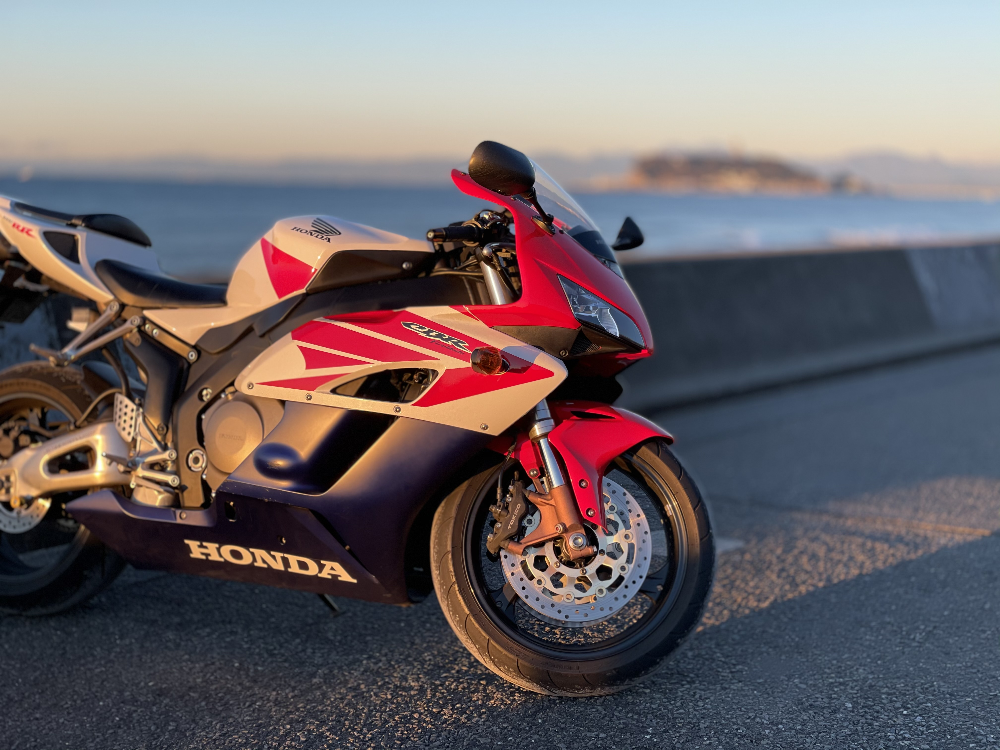
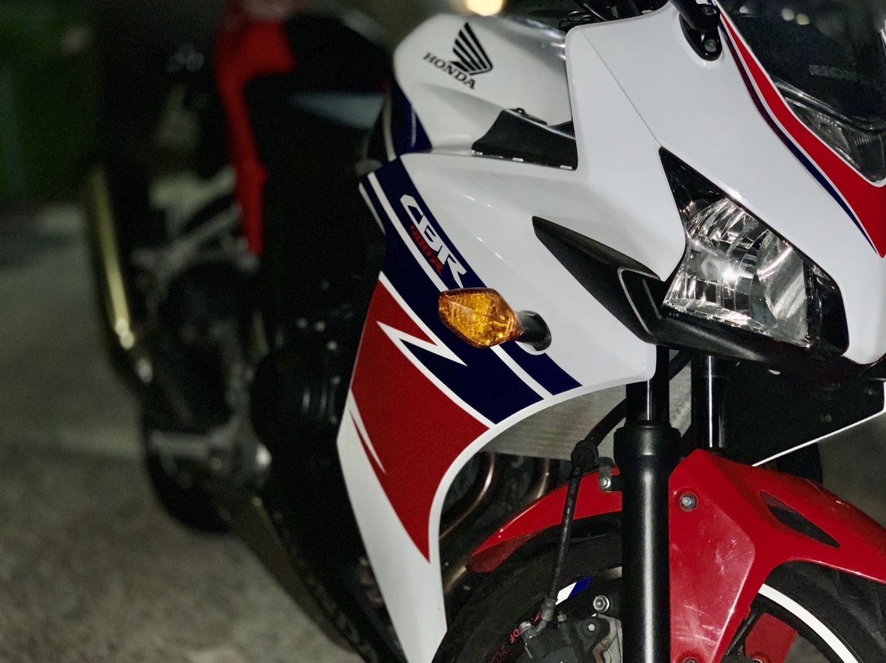
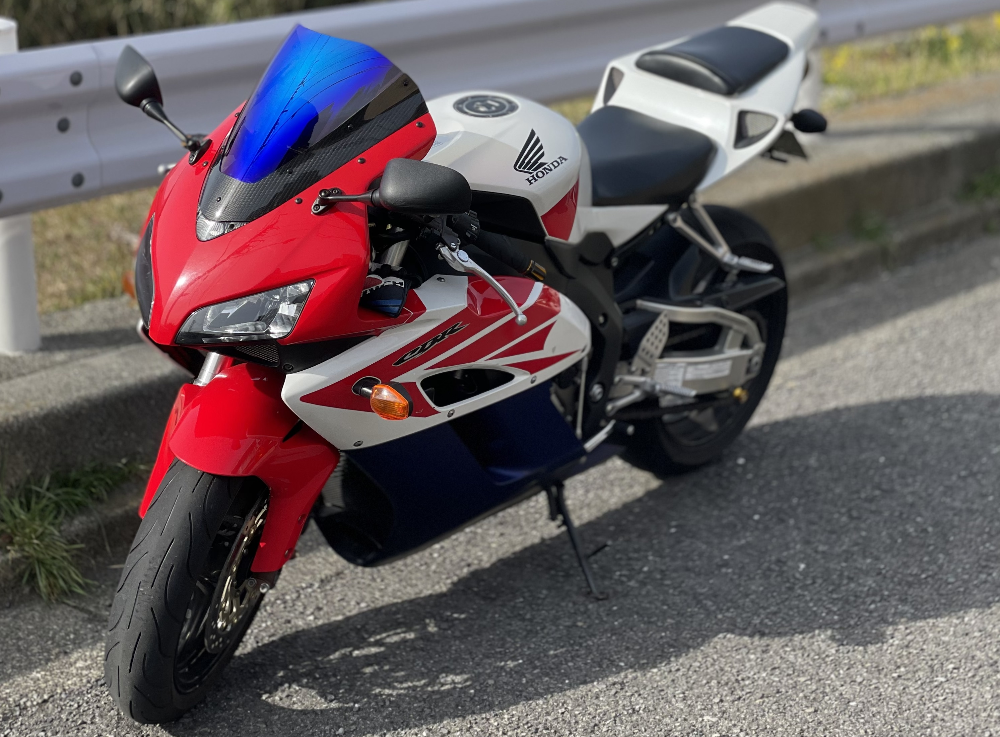
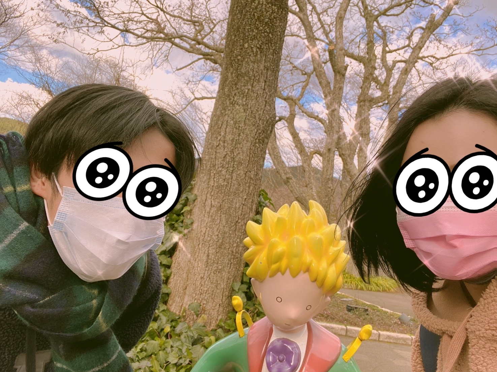
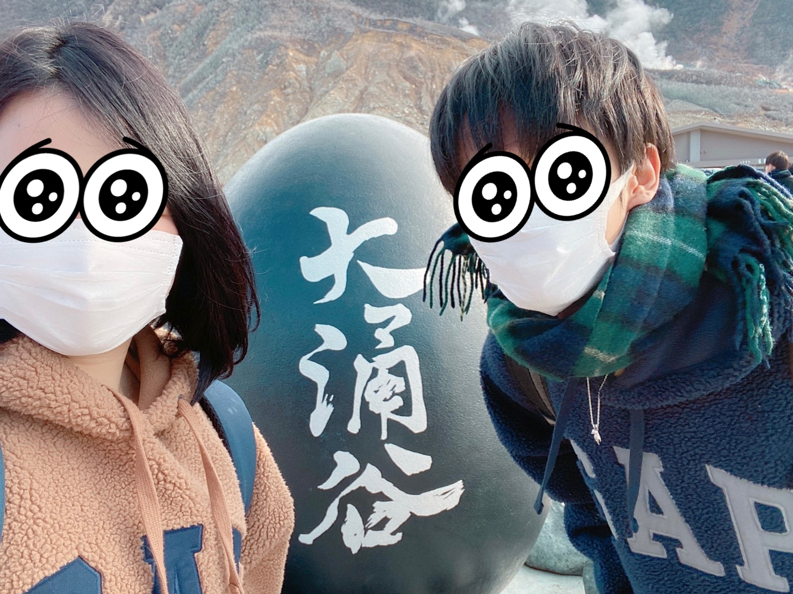
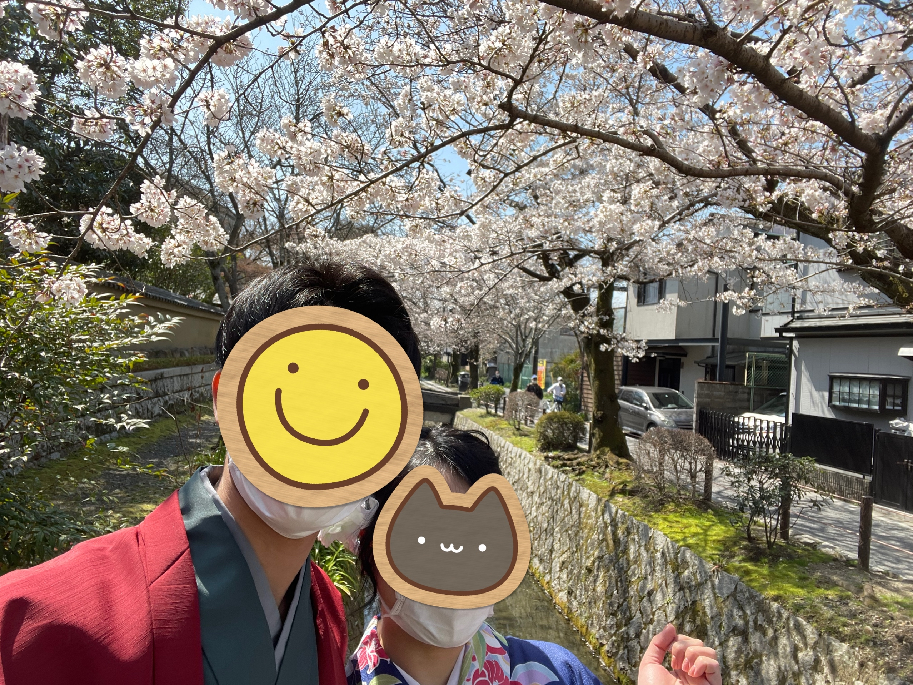
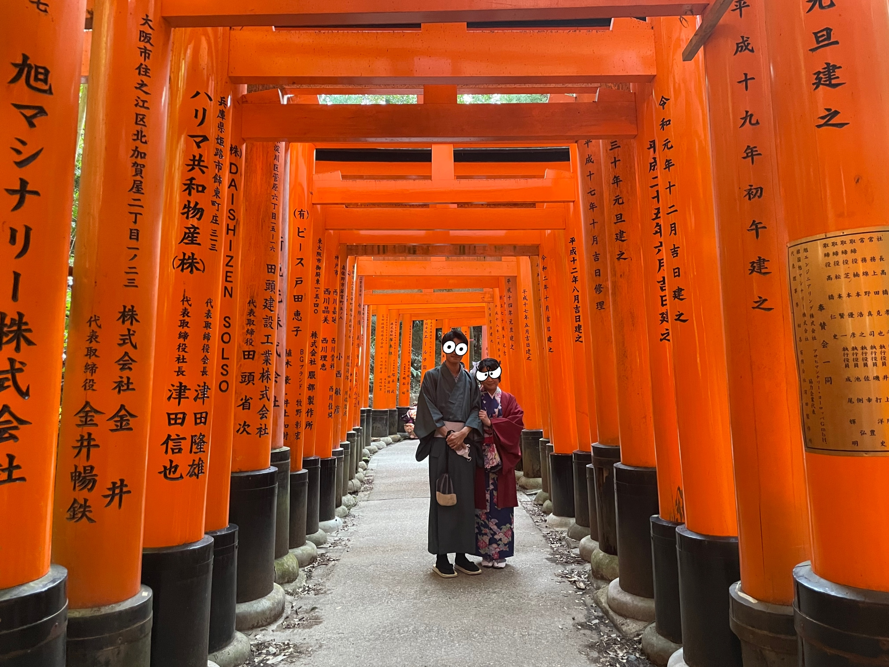

趣味！
バイク
- 
CBR1000RR SC57 - 
CBR400R - 
CBR1000RR SC57
私の１つ目の趣味はバイクです。
私が唯一お金をかけた趣味がバイクです。
私が初めて購入したのが１６歳のころで、右の写真のCBR400Rというバイクでした。
そのあと１８歳になり、大型免許を取得することができるようになったので左の写真のバイクに
乗り換えました。
乗り換えたバイクがCBR1000RR SC57という大型バイクです。
出そうと思えば１０秒くらいで300キロ以上出ます。※出したことは日本ではありません！
いくらかけたかというとざっと、200万くらいですｗ
色々な人たちに怒られました。
こんなに愛情もお金もかけたこのバイクなんですが、１ヶ月ほど前にひとり暮らしをするために売りさばきました。
旅行
２つ目の趣味は、旅行です。
私は旅行に行くのが趣味で、今まで色々なところへ行ってきました。
今はコロナ禍ということもありあまり行けず、悲しいです。
今年は、感染しないように徹底し、クリスマスに箱根、春休みには京都に行ってきました。
箱根旅行
箱根は今までバイクではかなりの頻度で行ってたのですが、電車で１泊２日で行くのは初めてでした。
箱根は温泉街ということもあって観光客が多かったです。
おすすめの温泉は箱根の湯という温泉で、温泉のほとんどが露天風呂でです。
体が疲れた時によく行くのですが、最高です。
１時間入っていくだけで肩こりや腰痛がなくなります。
地元の友達とよく行きます。
私たち学生のお財布にも優しい値段設定になっていて、箱根の温泉にしては安いです。
皆様にも是非行ってみてほしいです。
- 
星の王子様ミュージアム - 
大涌谷 
箱根の湯
京都旅行
今年の春休みに京都旅行に行ってきました。
京都に行くのはなんだかんだ初めてでしおりを作成して回りたい場所やスケジュールをしっかり立てていきました。
春休みということもあって、桜がものすごくきれいでした。
なんといっても、ごはんが最高においしかったです。
和菓子もおいしく１万円分程自分用に買って帰っちゃいましたｗ
前々から哲学の道に行ってみたいと思っていて行ってみたところ感動しました。
京都に行く機会があればぜひ皆様にも行ってもらいたいです。

清水寺- 
哲学の道 - 
伏見稲荷大社